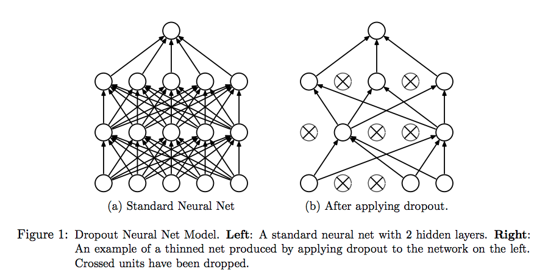
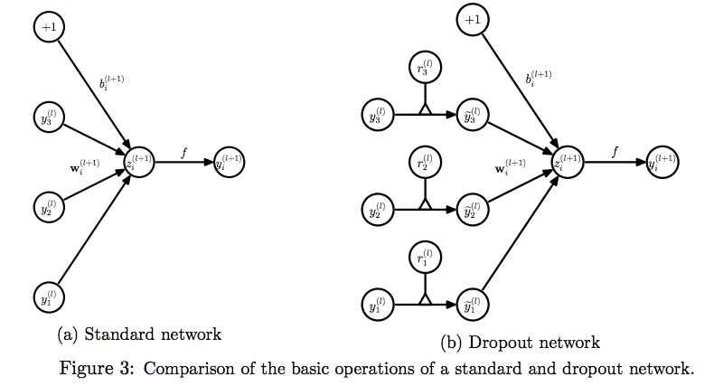
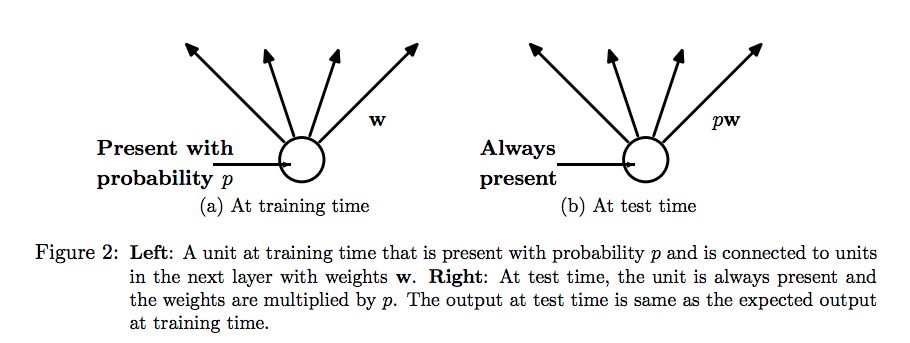

论文：Dropout: A Simple Way to Prevent Neural Networks from Overfitting
作者：Nitish Srivastava，Geoffrey Hinton，Alex Krizhevsky，Ilya Sutskever，Ruslan Salakhutdinov
Dropout 是指训练过程中，按照一定的概率随机把网络中的神经元暂时丢掉，使得每一个mini-batch都在训练不同的网络，可以有效防止过拟合。
神经网络有两个问题：（1）训练费时；（2）容易过拟合。为了解决过拟合的问题，可以采用训练多个模型再做组合的 ensemble 方法，但训练多个模型又很费时，Dropout 可以很好地解决这个问题，每次做完Dropout，相当于从原始网络中找到了一个更瘦的网络。

Dropout 动机
论文作者对dropout的动机有一个类比：用无性繁殖和有性繁殖类比dropout，自然界中中大型动物一般是有性繁殖，也就是后代的基因从父母两方各继承一半。对于优秀基因，无性繁殖可以大段大段地保留，而有性繁殖会把基因拆了又拆，破坏了大段基因的联合适应性，所以看起来无性繁殖似乎更加合理，但自然选择毕竟没有选择无性繁殖，所以我们假设，基因的力量在于其混合的能力，而不是单个基因的能力。
做一个比喻，比如要搞恐怖袭击，有两种方案：
（1）集中50个人，密切分工搞一次大爆破；
（2）把50个人分成10个组，每组5人分头行动，随便怎么搞成功一次就算。
显然第二种成功的机率更大，类似的，有性繁殖的方式不仅可以把优秀的基因传下来，还降低了基因之间的联合适应性，把复杂的大段基因的联合适应性变成一个个小段基因的联合适应性，dropout起到的效果也是类似的，它强迫每个神经元，让他学着和随机挑出来的其他神经元一起工作时都能达到很好的效果，减弱了神经元之间的联合适应性，增强了泛化能力。
植物和微生物大多采用无性繁殖，因为他们的生存环境变化很小，适应环境的能力不需要太强，所以保留大段优秀的基因适应当前的环境就够了。而高等动物需要随时适应新环境，基因间联合适应单元变小能提高生存的概率。
Dropout 用法
没加dropout时每个单元的计算是:
训练时加入dropout后，每个单元出现的概率是p，所以计算时加了一步概率：

测试时，每个单元都会出现，且每个单元的参数都要先乘一个 $p$。

Dropout 参数$p$的选择：
- Dropout 用在隐藏层时，$p = 0.5$ 的时候效果最好，因为此时dropout随机生成的网络结构最多。
- 用在input输入上时，可以当作一种添加噪声的方法，此时 $p$ 应设为更接近1的数，使输入变化不会太大。
如果要pretrain，在用Dropout时，要把所有参数都乘以$1/p$
dropout由固定值变为一个区间，可以提高效果。
要区分不同的类别，也就是让学到的特征区分度比较大，在数据量足够的情况下不会发生过拟合，但数据量较小时，可以通过增加稀疏性，来增加特征的区分度。